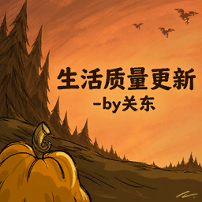

日常新编
《饥荒联机版》 · 关东 · 0.1.234

扩展料理推荐、储物制作、基地供电与传送，并为薇洛、薇格弗德和沃拓克斯加入专属玩法。
服务端和所有客户端均需启用。Steam 创意工坊
薇洛
打火机、施法和伯尼共用随身余烬。
打火机与余烬格
装备打火机时，手部栏上方显示独立余烬格。可开启自动收集余烬。补耐久阈值可选 55% 或 10%，默认 55%。达到设定阈值后可消耗余烬补耐久。已解锁月火时，默认允许骑皮弗娄牛施放。
控火与狂热焚烧
控火令薇洛点燃的生物燃烧时间翻倍，燃烧伤害提高 50%。狂热焚烧消耗 1 个余烬开启，每 60 秒再消耗 1 个续期，物理伤害提高 25%，适用于月火和影火的物理部分。再次施放或点击状态图标可关闭。
巨型伯尼
- 头脑发热 学习技能并开启对应配置后，落地的伯尼会在发现敌人时自动巨大化并嘲讽。对巨兽强制嘲讽 4 秒，同一只伯尼对同一巨兽的自动嘲讽间隔为 10 秒。
- 燃烧伯尼 点燃后反伤光环持续 20 秒。开启自动续燃时，每轮消耗 1 个余烬，余烬耗尽后在本轮结束时熄灭。
- 骑士伯尼 自己的巨型伯尼替薇洛承担护甲结算后 10% 的物理伤害。
- 双重锁定 薇洛和巨型伯尼共同攻击同一目标时，10% 物理增伤也适用于月火和影火的物理部分。
开启减伤与回血强化时，暗影与月亮形态的巨型伯尼受到的伤害降低 30%，低于半血时减伤提高至 55%。低于半血且已解锁对应生命回复技能时，每次技能回复量翻倍。
薇格弗德
同时启用独立版《更全面的女武神》时，本组角色功能由独立版接管。
战斗圆盾
圆盾装在独立副手栏，主手持武器时也能格挡。格挡成功使本轮窗口延长 0.5 秒，并将充能至少提高至 75%，最多还剩 2.5 秒冷却。连续成功格挡会保留已有充能。
战意触发时，战斗圆盾和统帅头盔按相同点数修复。手持经彩虹宝石升级的充能奔雷矛时，两件装备的修复量翻倍。
奔雷矛
普通奔雷矛拥有 300 点耐久，充能奔雷矛拥有 400 点。彩虹宝石升级提供低血量斩杀。突刺每命中一个有效目标恢复 8 点矛耐久，单次最多 16 点。
冲刺前摇可使用原版、15 帧或无前摇，默认无前摇。开启拳击袋练功时，打拳击袋可积攒灵感和战意，命中也可触发奔雷矛突刺的耐久修复。
| 技能 | 已投入点数 | 效果 |
|---|
| 雷霆疾奏 | 3 | 普通攻击速度提高 20%。 |
|---|
| 震荡余音 | 6 | 普攻对主目标 2 个游戏单位内的其他敌人造成 50% 溅射伤害。 |
|---|
| 天雷终章 | 9 | 突刺命中时，对首个有效目标额外造成 100 物理伤害和 30 位面伤害，冷却 10 秒。 |
|---|
战歌与战地指挥
号子罐有 14 格。「粗鲁插曲」与「惊心独白」可从快捷栏施放，格内显示冷却。快捷栏可识别物品栏、已装备背包及随身号子罐里的战吼。
- 自动领唱 灵感足够且有空余战歌槽时，按号子罐顺序补唱尚未生效的持续战歌。
- 战地领唱 战歌覆盖半径增加 1 格地皮。
- 应声合唱 范围内的队友攻击薇格弗德锁定或刚击中的目标时，回复 3 点灵感，每 2 秒最多触发一次。
- 同袍守护 吟唱期间分担范围内队友 10% 的物理攻击伤害，双方分别结算护甲与减伤。低于设定生命阈值时暂停，默认阈值为 20%。
沃拓克斯
灵魂罐
wortox_souljar · 随身容器
解锁灵魂罐技能后，用空瓶 ×1、大理石 ×2、红宝石 ×1 制作。散装灵魂达到上限时，多出的灵魂可以自动转入随身罐。学会对应进阶技能并携带灵魂罐时，可防止灵魂过载。
从地图发起长距离跳跃时优先扣除罐内灵魂，剩余费用由随身散装灵魂补足。近距离跳跃使用散装灵魂。状态栏区分物品栏和罐内数量。
双尾心
wortox_reviver · 回生物品
一级回生术解锁 10 个灵魂的配方，三级回生术将费用降为 5 个。释放折扣双尾心时，按实际投入乘以新鲜度比例并向上取整。例如用 5 个灵魂制作、剩余 50% 新鲜度时，可释放 3 个。分解返还也受实际投入限制。
料理推荐
适用于普通餐锅、便携锅和档案馆料理锅。可读锅边的冰箱、盐盒，以及随身的树枝、干花瓣等指定填充物。
取料与成品预览
- 打开锅后先显示已经核对的可制作菜品，搜索到的新结果会陆续补入。
- 点击菜品即可填入缺少的食材。配料有多套选择时，优先考虑填充物和新鲜度较低的食材。
- 放齐四份配料后，可查看成品、属性收益和预计烹饪时间。若有多个可能成品，会分别列出。取料后由玩家手动开煮。
排序与适用范围
可按生命、理智或饱食排序。智能推荐会考虑官方角色的属性缺口、食物收益和饮食限制。上次开煮的料理若仍能制作，会在智能推荐中排在首位。模组角色可用基础列表和手动排序。普通木箱里的食材不计入料理搜索。此为客户端选项，默认开启。
管网制作与收纳
管道套件
在炼金引擎旁用石砖 ×1、金块 ×1、绳子 ×1 制作。可给木箱、龙鳞宝箱与制作站接管。站在接管的制作站旁使用原版制作栏时，会优先使用随身材料，再从相连箱子取料。
普通管道单段最长 3.25 个游戏单位。管道套件加 1 个齿轮可制作桥接套件，两端各装一个可跨接最多 4 个游戏单位，中途需要留出通道。自动整理默认关闭，开启后关箱会整理同一管网内已关闭的箱子。
装备栏与龙鳞火炉
独立背包栏默认关闭，开启后可同时穿背包和护甲。独立饰品栏默认开启，支持原版护符和相应模组护符。部分衣物可以穿在护甲内，空背包可以收进物品栏。
龙鳞火炉有 9 格收纳，可批量烤熟食材，也能将木头按 1:1 加工成木炭。加工和原版焚烧使用独立按钮。
供电与建筑
通用发电机通过地面电线给设备供电。线路可以从发电机直接引出，也可以从现有电线分支。
| 物品 | 炼金引擎配方 | 用途 |
|---|
| 通用发电机 | 金块 ×4、木板 ×4、齿轮 ×1 | 三个燃料格，支持木头、木炭、宝石、纯粹辉煌和启迪碎片。启迪碎片沿用过载及冷却。 |
|---|
| 电线套件 | 金块 ×1、草 ×2 | 每段约 4 格地皮，一条线路最多 12 个拐点，接好消耗 1 个套件。 |
|---|
| 路灯 | 石砖 ×2、金块 ×2、萤火虫 ×1 | 接线用电。断线后可使用荧光果，其腐坏速度为常速的 25%。 |
|---|
| 洒水器 | 金块 ×4、蓝宝石 ×1、冰 ×6 | 靠近海水放置，为植物和耕地浇水并协助灭火。优先用电，无电时可用燃料。 |
|---|
拆下设备接线可回收套件，仍供其他设备使用的主线会保留。通用发电机也可为电线地皮与犬牙陷阱供电，通电陷阱触发后可以自动复位。
传送护符
qol_teleport_amulet · 饰品
在远古伪科学站使用铥矿 ×2、噩梦燃料 ×3、砂之石 ×1 制作。佩戴后右键触摸懒人传送塔，可独自选择已探索且路线可达的塔。塔支持命名，未命名时显示编号。骑乘或搬运重物时无法使用。
每次成功传送消耗 1 点耐久和 50 点理智。满耐久可用 30 次，1 颗砂之石修复 15 次。
巨兽仇恨
巨兽按实际扣除的生命累积仇恨，优先追击能攻击的目标中仇恨最高者。强制嘲讽结束后会按累计仇恨重新选目标。
- 普通角色按 1 倍计算。薇格弗德默认 3 倍，可改回 1 倍。
- 巨型伯尼的伤害与反伤按 50 倍计算。
- 佩戴仇恨护符时，玩家的倍率固定为 5 倍。护符无耐久消耗，在暗影操控器旁用金块 ×3、噩梦燃料 ×3、红宝石 ×1 制作。
装备与护符
漩涡斗篷
qol_vortex_cloak · 储物与护甲
使用噩梦燃料 ×5、暗影护甲 ×1 制作，基础容量为 10 格。手持斗篷可右键吞噬放在地上的升级物品。
| 吞噬物品 | 效果 |
|---|
| 坎普斯背包 | 扩为 14 格。 |
|---|
| 保鲜背包 | 底部四格的物品腐坏速度减半。 |
|---|
| 暗影心房 | 获得 1260 点护甲耐久，物理吸收从 50% 起步。之后可用纯粹恐惧和纯粹辉煌继续强化。 |
|---|
| 骨甲 | 心房升级后才可吞噬。护盾沿用骨甲冷却，每次触发消耗 5% 最大耐久。 |
|---|
升级后的斗篷穿戴时可自修。普通理智状态下，基础消耗为每分钟 20 点理智。启蒙状态下，自修速度为平时的 75%。
猴子护符与蟾蜍护符
| 护符 | 制作 | 佩戴效果 |
|---|
| 猴子护符 | 灵子分解器 · 金块 ×3、香蕉 ×2、绿宝石 ×1 | 佩戴者亲手击杀海盗猴时掉落净化的诅咒饰品。可安全拾取，每个可向猪王换 2 个金块，或向蚁狮换 2 块石头。 |
|---|
| 蟾蜍护符 | 暗影操控器 · 辣椒 ×2、盐晶 ×3、蛙腿 ×2、金块 ×3 | 对普通和悲惨的毒菌蟾蜍造成双倍伤害，受到的相关伤害减少 30%。可累计佩戴三天。 |
|---|
原版装备调整
- 多用斧镐 最大耐久 1260，基础攻击力 22.5。原版旧档首次启用时按比例继承，400/800 变成 630/1260。此前用同一模组保存的 400/1260 保留原值，迁移后再次保存则沿用当时的点数。
- 玻璃刀 月亮亲和角色使用时耐久消耗减半，可与对暗影目标的原有减免叠加。
- 暗夜剑 攻击月亮阵营目标消耗半点耐久，并造成 10% 额外伤害。
- 双壳套装 给尖壳蜗牛或圆壳蜗牛一颗盐晶，可分别取得贝壳头盔或蜗壳护甲。两件同穿时，缩壳挡击使两件装备各少扣 25% 耐久。
地图生成与洞察点
新建地表
杀人蜂走廊与包含三个海象营地的海象平原默认必定生成，均可改为原版随机。仅适用于使用原版默认或经典地形预设新建的地表。
洞察点上限
默认使用原版 15 点。启用「全解锁（亲和互斥）」后，达到 15 点时补齐普通技能和一侧亲和所需点数。技能前置与亲和互斥仍生效。
配置与版本
在世界模组设置中调整装备栏、堆肥桶容量、火炉加工、角色玩法和地图生成。堆肥桶默认 24 份，可改回原版。启迪之冠默认在理智高于 50% 时发光，另有常亮、20% 和原版条件可选。修改标注需重进的选项后，重新进入世界生效。
内容依据 0.1.234 发布包及原版脚本核对。问题反馈 QQ 交流群：1131834002